We've fragmented our natural sensory experience, screens for vision, speakers for sound, keyboards for touch, creating artificial boundaries where none existed.
What if the "missing sense" we've always searched for, or what we've always called the "6th sense," isn't a new sense at all, but the natural integration of all our senses? What if there are senses we haven't even discovered yet?
This project uses computational design to reunite our fragmented perception, creating new sensory experiences that transcend the artificial boundaries we've built.
Sensing Senses
Computational Design for Sensory Integration
Impossible Combinations?
taste colors
see sounds
smell shapes
feel memories
hear textures
touch emotions
taste thoughts
see time
hear silence
The Argument
If we can transcend the built boundaries of the five-sense model,
then we can treat sensory integration as a design material
then we can treat sensory integration as a design material
Built Boundaries: De Anima, Aristotle, 350 BC
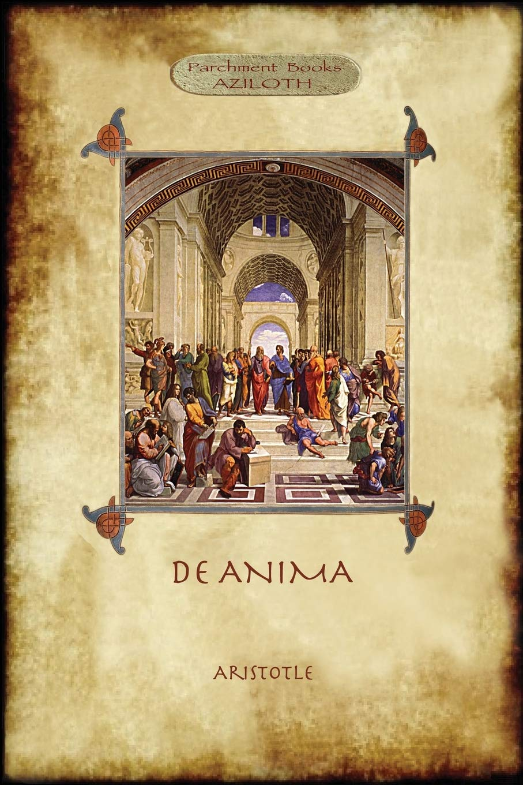
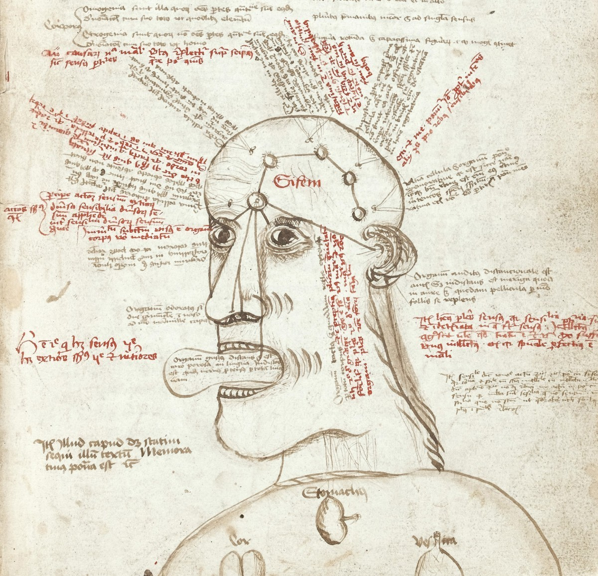
Built Boundaries: Treatise on Man, Descartes, 1662

Built Boundaries: Opticks, Newton, 1704
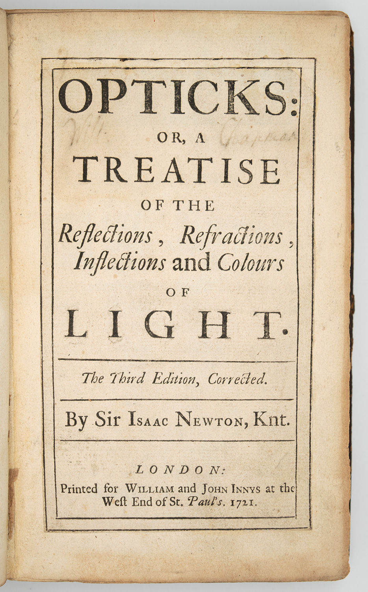
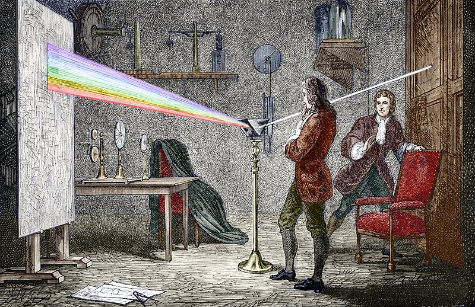
Senses Integrated: Machine Hallucination, Anadol, 2019
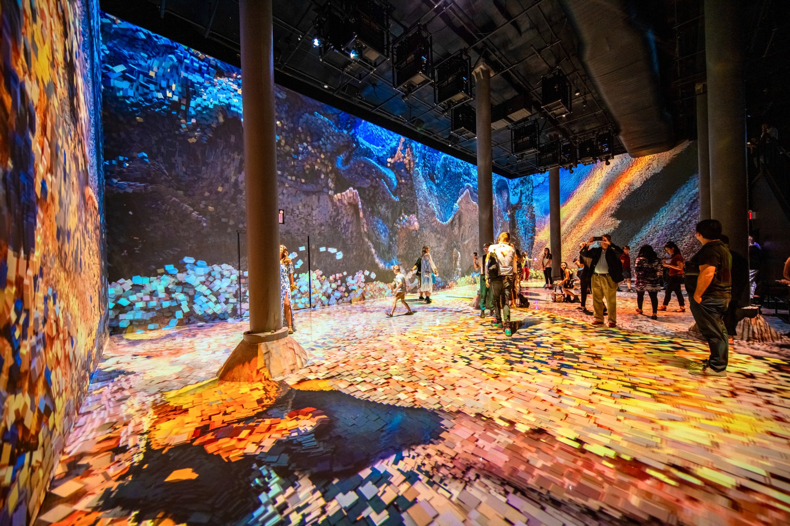
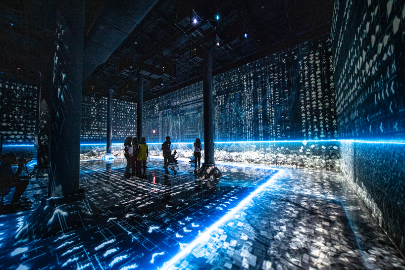
Senses Integrated: Borderless, teamLab, 2018
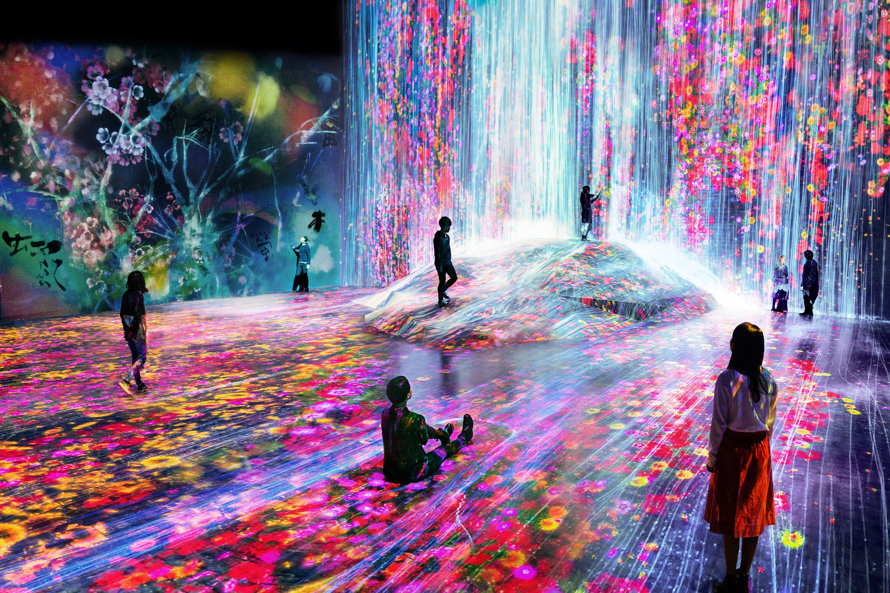
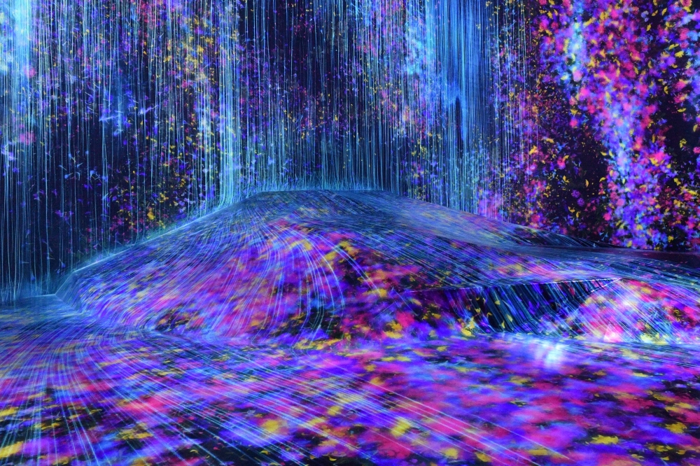
Senses Integrated: Pulse Room, Hemmer, 2006
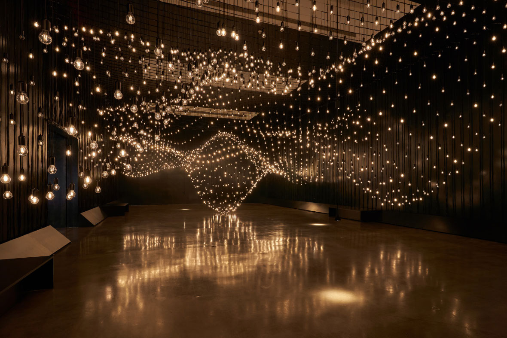
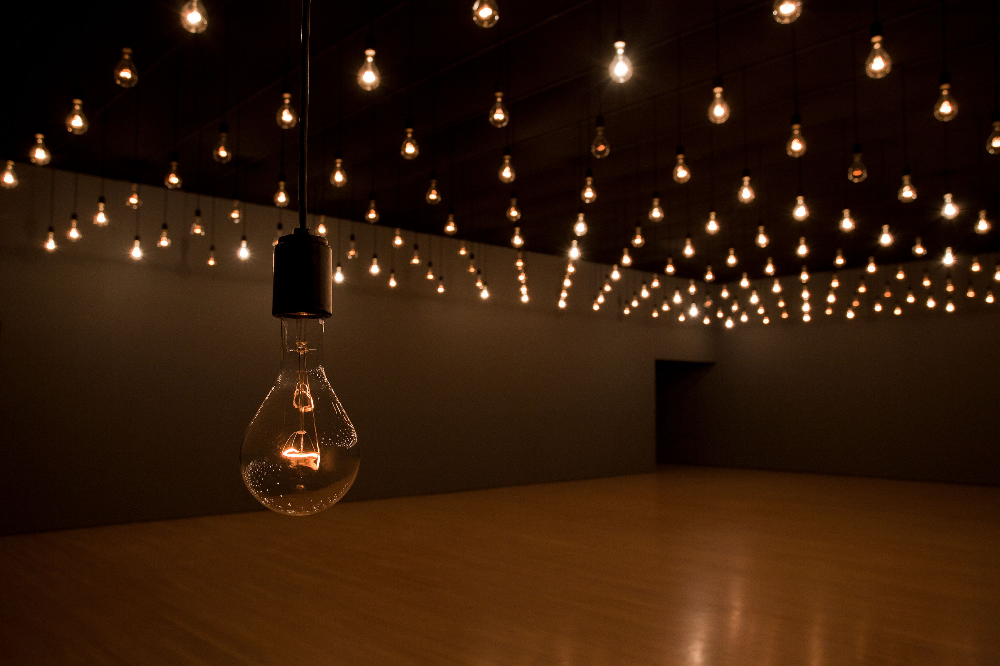
Senses Integrated: Data-verse, Ikeda, 2019
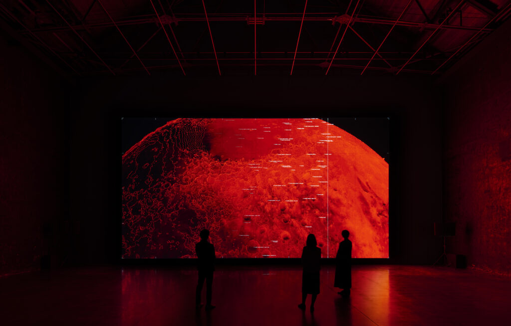

Research & Methods Network
Research Question
How can computational design create new sensory experiences that transcend the traditional five-sense model?
Situated Technology
"Embedded is a question, namely, whether there is an oppositional space to the computable, and if there is such a thing as incomputable qualities, ideas, or experiences. And perhaps we intuitively know the answer—yes—but how do we capture what's ineffable, and what's incomputable?"
— Khan, Nora N. 2022. Mirror Stage: Between Computability and Its Opposite. HOLO 3.
Computational Design Experiments: Hear Textures
Amethyst Sound Machine
Computational Design Experiments: Taste Colors
Computational Taste Synthesis
Input Colors
Color Mix
Add colors
Computed Taste
Compute taste
Taste Analysis
Add colors and click "Compute Taste" to analyze your color combination
Algorithm: Analyzes hue, saturation, brightness, and color relationships to compute taste profiles using synesthetic mapping principles
Visual Representation
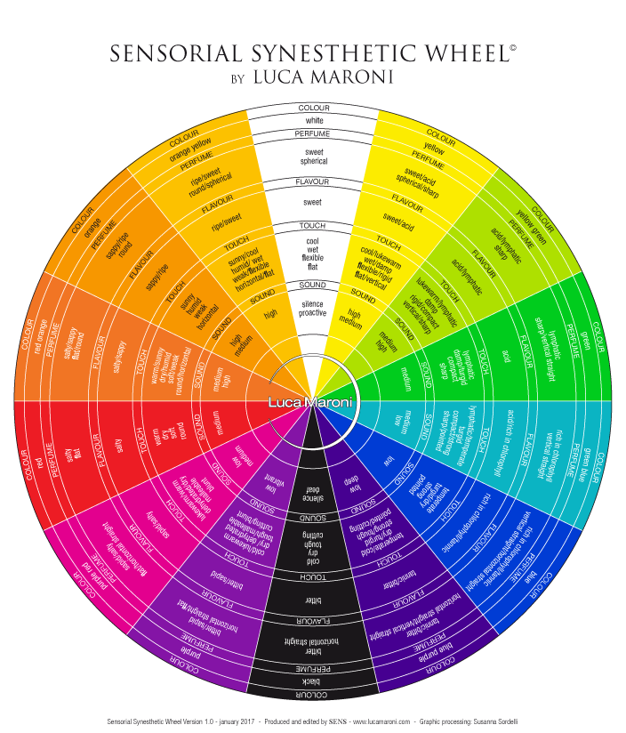
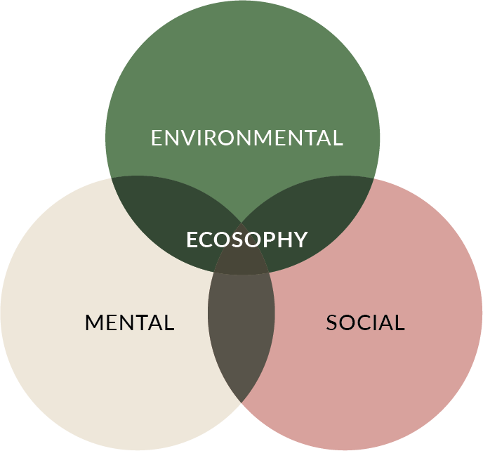

Capstone Project Outline
"Sight isn't the only way to experience the world: Senses work in tandem to guide cognition, movement, and communication. Experts posit that humans possess between 9 and 33 distinct senses, yet digital design routinely ignores neurological factors beyond sight. Sensory design principles emphasize the interconnection of human perception and prompt designers to explore non-visual solutions."
— Micah Bowers, Managing Editor, Design and Developer Content Marketing, Toptal
Research
Design
Prototype
Test
Iterate
Sensory
Mapping
Mapping
Cross-Modal
Design
Design
Multi-Sensory
Experience
Experience
User
Feedback
Feedback
Refined
Experience
Experience
The Challenge
| Challenge | Problem | Impact |
|---|---|---|
| The Individuality Problem | Computational systems assume universal sensory experiences, but human perception is highly individual and variable | Digital sensory design fails to account for personal differences in perception, sensitivity, and preference |
| Quantifying the Qualitative | How to translate qualitative sensory experiences into quantitative computational systems | Loss of meaning when rich experiences are reduced to data points |
| The Cross-Modal Research Gap | Most research studies senses in isolation, missing how they work together | Incomplete understanding of how senses interact and influence each other |